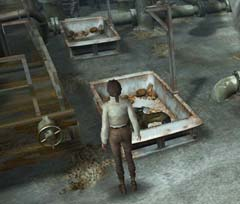

| 概要 | 地図 | |
| 淡いヒント集 | ヒント集 | 的確なヒント集 |
| 攻略最短ルート | Syberia 攻略へ |
| << 前の段階へ | 地域選択へ | 次の段階へ >> |
コムコルツグラッド
|
宇宙基地にて
オスカーの腕を取り戻すために、あなたはアラルバッドへ行く必要がある。そこで、アラルバッドへ行く手がかりを知っているという宇宙飛行士に会うために、宇宙基地へ行ったのだが・・・。あなたは、ここで以下のことをしなくてはならない。 ・大佐を気絶させる ・気絶した大佐を回復させる ・大佐の部屋にあるアイテムを収集 ・アラルバッドへ行く方法を調べる ・大佐の要求を聞く 
・これが大佐である。 ・どうすれば気絶するだろうか? ・間違ってもあなたが手を挙げる必要はない。 ・アイテムはどこにあるか。

・大佐が気絶し、倒れた先はこの装置のトレーの中である。 ・このトレーは、装置を使うと動かすことができる。 ・これを利用して大佐の意識を取り戻す方法はないだろうか。 ・また、装置はどうやったら動くのか。 
・この宇宙基地のどこにアラルバッドへ行く方法があるのか? ・また、大佐はどうしたら行く方法を教えてくれるのか? ・ひたすら聞き込みと調査をしなければならない。 |
| << 前の段階へ | 地域選択へ | 次の段階へ >> |
| 概要 | 地図 | |
| 淡いヒント集 | ヒント集 | 的確なヒント集 |
| 攻略最短ルート | Syberia 攻略へ |
Syberia
| 目次へ戻る | ページの上部へ |